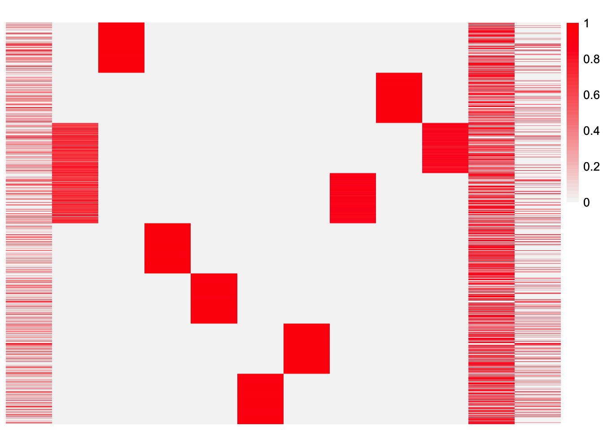

simulation-normal-data
Annie Xie
2024-04-22
Last updated: 2024-05-01
Checks: 7 0
Knit directory: EBCD_GBCD_comparison/
This reproducible R Markdown analysis was created with workflowr (version 1.7.1). The Checks tab describes the reproducibility checks that were applied when the results were created. The Past versions tab lists the development history.
Great! Since the R Markdown file has been committed to the Git repository, you know the exact version of the code that produced these results.
Great job! The global environment was empty. Objects defined in the global environment can affect the analysis in your R Markdown file in unknown ways. For reproduciblity it’s best to always run the code in an empty environment.
The command set.seed(20240229) was run prior to running
the code in the R Markdown file. Setting a seed ensures that any results
that rely on randomness, e.g. subsampling or permutations, are
reproducible.
Great job! Recording the operating system, R version, and package versions is critical for reproducibility.
Nice! There were no cached chunks for this analysis, so you can be confident that you successfully produced the results during this run.
Great job! Using relative paths to the files within your workflowr project makes it easier to run your code on other machines.
Great! You are using Git for version control. Tracking code development and connecting the code version to the results is critical for reproducibility.
The results in this page were generated with repository version e192c9e. See the Past versions tab to see a history of the changes made to the R Markdown and HTML files.
Note that you need to be careful to ensure that all relevant files for
the analysis have been committed to Git prior to generating the results
(you can use wflow_publish or
wflow_git_commit). workflowr only checks the R Markdown
file, but you know if there are other scripts or data files that it
depends on. Below is the status of the Git repository when the results
were generated:
Ignored files:
Ignored: .DS_Store
Ignored: .Rhistory
Ignored: data/.DS_Store
Untracked files:
Untracked: analysis/EBCD-subtype-exploration.Rmd
Untracked: code/EBCD subtype exploration full.Rmd
Untracked: data/iter1_normal_only_subtype_data.rds
Untracked: data/iter1_normal_subtype_only_ebcd.rds
Untracked: data/iter1_only_subtype_data.rds
Untracked: data/iter1_only_subtype_data2.rds
Untracked: data/iter1_only_subtype_data2_ebcd.rds
Untracked: data/iter1_subtype_only_ebcd.rds
Untracked: data/iter1_subtype_only_ebcd_true_init.RData
Note that any generated files, e.g. HTML, png, CSS, etc., are not included in this status report because it is ok for generated content to have uncommitted changes.
These are the previous versions of the repository in which changes were
made to the R Markdown
(analysis/simulation-normal-data.Rmd) and HTML
(docs/simulation-normal-data.html) files. If you’ve
configured a remote Git repository (see ?wflow_git_remote),
click on the hyperlinks in the table below to view the files as they
were in that past version.
| File | Version | Author | Date | Message |
|---|---|---|---|---|
| Rmd | e192c9e | Annie Xie | 2024-05-01 | Made minor changes to simulation analyses |
| html | 553021a | Annie Xie | 2024-04-27 | Build site. |
| Rmd | 9150b80 | Annie Xie | 2024-04-27 | Add normal data simulation |
Introduction
The Stephens Lab has proposed two different ways of performing orthogonal matrix factorization, Generalized Binary Covariance Decomposition (GBCD) and Empirical Bayes Covariance Decomposition (EBCD). In this analysis, I want to compare these two methods on simulated data with normal noise. The motivation for this analysis comes from the observation that EBCD sometimes behaves unexpectedly on simulated single-cell RNAseq data. I wondered if the unexpected behavior was due to model misspecification and perhaps a lack of robustness for this in the EBCD method. Therefore, I wanted to simulate data from the true model that EBCD fits, and see if we still get any weird behavior. I also want to compare how similar (and different) the EBCD and GBCD results are.
Code for Simulated Data
##################################### simulate the single cell RNA-seq data for 20 replicates ##################################################
### simulate normal data
# note to self: I could take the L and F from previous data matrix and add normal random noise to LF'
for(iter in 1:1){
### set the seed
set.seed(iter)
### simulate L
L <- matrix(0, nrow=1600, ncol=11)
L[1:800, 1] <- 1
L[801:1600, 2] <- 1
L[sample(1:nrow(L), 600, replace=FALSE), 3] <- runif(600, min=0.4, max=2)
L[1:200, 4] <- 1
L[201:400, 5] <- 1
L[401:600, 6] <- 1
L[601:800, 7] <- 1
L[801:1000, 8] <- 1
L[1001:1200, 9] <- 1
L[1201:1400, 10] <- 1
L[1401:1600, 11] <- 1
### simulate F
F <- matrix(0, nrow=5000, ncol=11)
F[1:75, 1] <- pmax(rnorm(75, log2(3), 0.5), log2(1.5))
F[76:150, 2] <- pmax(rnorm(75, log2(3), 0.5), log2(1.5))
F[251:500, 3] <- pmax(rnorm(250, log2(3), 0.5), log2(1.5))
F[501:1000, 4] <- pmax(rnorm(500, log2(3), 0.5), log2(1.5))
F[1001:1500, 5] <- pmax(rnorm(500, log2(3), 0.5), log2(1.5))
F[1501:2000, 6] <- pmax(rnorm(500, log2(3), 0.5), log2(1.5))
F[2001:2500, 7] <- pmax(rnorm(500, log2(3), 0.5), log2(1.5))
F[2501:3000, 8] <- pmax(rnorm(500, log2(3), 0.5), log2(1.5))
F[3001:3500, 9] <- pmax(rnorm(500, log2(3), 0.5), log2(1.5))
F[3501:4000, 10] <- pmax(rnorm(500, log2(3), 0.5), log2(1.5))
F[4001:4500, 11] <- pmax(rnorm(500, log2(3), 0.5), log2(1.5))
### add normal noise
E <- matrix(rnorm(nrow(L)*nrow(F), mean = 0, sd = 1), ncol = nrow(F))
Y = L %*% t(F) + E
### save the simulated data
data <- list(Y = Y, L = L, F = F)
saveRDS(data, file=paste0("data/iter", iter, "_normal_data.rds"))
rm(data, L, F, Y, E)
}Package and Functions for Analyses
library(ggplot2)
library(cowplot)
library(RColorBrewer)
library(ggrepel)
library(pheatmap)
library(gridExtra)
#library(Seurat)
library(Matrix)
library(ebnm)
library(flashier)Loading required package: magrittrlibrary(magrittr)
library(ashr)
library(irlba)
library(reshape2)
library(patchwork)
Attaching package: 'patchwork'The following object is masked from 'package:cowplot':
align_plotslibrary(fastTopics)
source("~/Documents/PhD 3/Research/EBCD/gbcd-workflow/code/fit_cov_ebnmf.R")plot_heatmap <- function(L, title = ""){
### define the color map
cols <- colorRampPalette(c("gray96", "red"))(49)
brks <- seq(min(L), max(L), length=50)
plt <- pheatmap(L, show_rownames = FALSE, show_colnames = FALSE, cluster_rows = FALSE, cluster_cols = FALSE, color = cols, breaks = brks, main = title)
return(plt)
}source("~/Documents/PhD 3/Research/EBCD/ebcd_functions.R")
source("~/Documents/PhD 3/Research/EBCD/gbcd_functions.R")Simulated Dataset
### load in the simulated single cell data from this replicate
iter <- 1
data <- readRDS(paste0("data/iter", iter, "_normal_data.rds"))This is a heatmap of the loadings matrix:
plot_heatmap(data$L)
| Version | Author | Date |
|---|---|---|
| 553021a | Annie Xie | 2024-04-27 |
This is a heatmap of the factor matrix:
plot_heatmap(data$F)
| Version | Author | Date |
|---|---|---|
| 553021a | Annie Xie | 2024-04-27 |
observed.vals <- data$Y %*% t(data$Y)/ ncol(data$Y)This is a heatmap of the Gram matrix:
plot_heatmap(observed.vals)GBCD Analysis
Hypothesis
I think GBCD should be able to recover something close to the true loadings estimate. However, it may not be exact since this loadings matrix is not generated exactly from the model used to create the loadings estimate. GBCD gets an estimate for the loadings matrix by fitting \(LL^{T} + \sigma^2 I + E\) to the Gram matrix, where \(E\) is normally-distributed random noise. Regardless, I do think that GBCD should recover one factor for each patient effect, one factor for each subtype, and a factor corresponding to the shared GEP.
Analysis
This is the code to run the GBCD analysis.
# I used Kmax = 16. I might want to try with different Kmax?
fit.gbcd <- flash_fit_cov_ebnmf(Y = data$Y, Kmax = 16, prior = ebnm::ebnm_generalized_binary, thres = 0.9, extrapolate = FALSE)I have the results saved, so I will just load the results directly.
fit.gbcd <- readRDS(paste0("data/iter", iter, "_normal_data_gbcd.rds"))This is a plot of estimate for \(L\):
plot_heatmap(fit.gbcd$L)
This is code to check if there are any factors that are numerically zero. (This is something that I’ve seen happen in other estimates.) I feel like it would make sense for GBCD to remove loadings that correspond to numerically zero factors.
sqrt(colSums(fit.gbcd$F$lfc^2))Baseline GEP1 GEP2 GEP3 GEP4 GEP5 GEP6 GEP7
78.60203 64.56001 63.08175 63.10883 62.26083 62.06238 63.21376 62.56388
GEP8 GEP9 GEP10 GEP11 GEP12
63.41924 0.00000 0.00000 0.00000 0.00000 Therefore are four factors that are numerically zero.
non_zero_factor_idx <- (sqrt(colSums(fit.gbcd$F$lfc^2)) > 0)This is a heatmap of the loadings that correspond to non-zero factors.
plot_heatmap(fit.gbcd$L[,non_zero_factor_idx])Rescale GBCD loadings estimate
I’m loading in previously saved results.
load("data/iter1_normal_data_gbcd_rescale.RData")This is the code to rescale the GBCD estimate. I’ve loaded in previously saved results.
fit.gbcd.rescale1 <- flash_fit_cov_ebnmf_fit_laplace(Y = data$Y, Kmax = 16, prior = ebnm::ebnm_generalized_binary, thres = 0.9, extrapolate = FALSE, maxiter = 500, verbose = 1)
fit.gbcd.rescale2 <- flash_fit_cov_ebnmf_fit_L(dat = fit.gbcd.rescale1$dat, fit.gbcd.rescale1$fit.cov, Y=data$Y, Kmax=16, prior = ebnm::ebnm_generalized_binary, thres = 0.9, extrapolate = FALSE, maxiter = 500, verbose = 1)LDF Method of Scaling:
fit.gbcd.rescale.ldf <- ldf(fit.gbcd.rescale2$fit.cov, type = 'i')
fit.gbcd.rescale.L <- fit.gbcd.rescale.ldf$L %*% diag(sqrt(fit.gbcd.rescale.ldf$D))
thres <- 0.9
k.idx <- which(fit.gbcd.rescale2$corr > thres)
fit.gbcd.rescale.L <- fit.gbcd.rescale.L[,fit.gbcd.rescale2$k.order][,k.idx]Assess Fit
plot_heatmap(fit.gbcd.rescale.L)gbcd.rescaled.fitted.vals <- fit.gbcd.rescale.L %*% t(fit.gbcd.rescale.L)observed.vals <- data$Y %*% t(data$Y)/ncol(data$Y)sum((observed.vals - gbcd.rescaled.fitted.vals)^2) - sum((diag(observed.vals) - diag(gbcd.rescaled.fitted.vals))^2)[1] 850.5104This is code to plot (a sub-sampple of) fitted values vs. observed values:
set.seed(3952)
diag_idx <- seq(1, prod(dim(observed.vals)), length.out = ncol(observed.vals))
off_diag_idx <- setdiff(c(1:prod(dim(observed.vals))), diag_idx)
samp.vals <- sample(off_diag_idx, size = 100000)ggplot(data = NULL, aes(x = c(as.matrix(observed.vals))[samp.vals], y = c(gbcd.rescaled.fitted.vals)[samp.vals])) + geom_point() + xlab('Observed Values') + ylab('Fitted Values') + geom_abline(slope = 1, intercept = 0, color = 'red')
| Version | Author | Date |
|---|---|---|
| 553021a | Annie Xie | 2024-04-27 |
This is a plot of the diagonal entries of the fitted values vs. the diagonal entries of the observed values:
ggplot(data = NULL, aes(x = diag(as.matrix(observed.vals)), y = diag(gbcd.rescaled.fitted.vals))) + geom_point() + xlab('Observed Values') + ylab('Fitted Values') + geom_abline(slope = 1, intercept = 0, color = 'red')
| Version | Author | Date |
|---|---|---|
| 553021a | Annie Xie | 2024-04-27 |
gbcd.rescaled.withdiag.fitted.vals <- fit.gbcd.rescale.L %*% t(fit.gbcd.rescale.L) + diag(rep(fit.gbcd.rescale2$s2, nrow(fit.gbcd.rescale.L)))sum((observed.vals - gbcd.rescaled.withdiag.fitted.vals)^2)[1] 851.5753samp.vals2 <- sample(c(1:prod(dim(observed.vals))), size = 100000)ggplot(data = NULL, aes(x = c(as.matrix(observed.vals))[samp.vals2], y = c(gbcd.rescaled.withdiag.fitted.vals)[samp.vals2])) + geom_point() + xlab('Observed Values') + ylab('Fitted Values') + geom_abline(slope = 1, intercept = 0, color = 'red')
| Version | Author | Date |
|---|---|---|
| 553021a | Annie Xie | 2024-04-27 |
Correlation of GBCD estimate to true loadings matrix
We compute the correlation of the GBCD estimate of the loadings matrix to the true loadings matrix.
correlation_GBCD_true <- cor(fit.gbcd$L, data$L)
colnames(correlation_GBCD_true) <- c('Subtype 1 GEP', 'Subtype 2 GEP', 'Shared GEP', paste('Patient', c(1:8)))correlation_GBCD_true Subtype 1 GEP Subtype 2 GEP Shared GEP Patient 1 Patient 2
Baseline 0.01207465 -0.01207465 0.998912275 0.008945767 0.03680248
GEP1 0.37982839 -0.37982839 -0.024464455 -0.141532996 -0.14192586
GEP2 0.37890836 -0.37890836 0.006038898 0.998971986 -0.14292360
GEP3 -0.37934481 0.37934481 -0.052289530 -0.143347994 -0.14345743
GEP4 -0.37895413 0.37895413 0.006946076 -0.142988741 -0.14352903
GEP5 0.38065681 -0.38065681 0.035385728 -0.140710693 0.99873948
GEP6 0.37618535 -0.37618535 -0.002038857 -0.143490348 -0.14349035
GEP7 -0.37902707 0.37902707 0.027132895 -0.143335718 -0.14333572
GEP8 -0.37736176 0.37736176 -0.005940165 -0.141961860 -0.14285183
GEP9 0.95581290 -0.95581290 0.034248445 0.261405392 0.34698584
GEP10 -0.96242096 0.96242096 -0.036034216 -0.363760931 -0.36376093
GEP11 0.60135094 -0.60135094 0.013331759 0.177601361 0.42153181
GEP12 0.02500524 -0.02500524 -0.034653709 -0.092615837 0.47719121
Patient 3 Patient 4 Patient 5 Patient 6 Patient 7
Baseline -0.004137443 -0.02335565 -0.0546153 -0.003665835 0.03497515
GEP1 -0.141236892 0.99894229 -0.1437184 -0.143417676 -0.14316738
GEP2 -0.143461587 -0.13973120 -0.1429801 -0.143461587 -0.14295236
GEP3 -0.142215117 -0.14449490 0.9988874 -0.140694757 -0.14340277
GEP4 -0.143099177 -0.14330784 -0.1434159 -0.139278057 -0.14324929
GEP5 -0.142063835 -0.14046594 -0.1447590 -0.143761227 -0.14383274
GEP6 0.999209828 -0.14349035 -0.1418876 -0.142880953 -0.14165704
GEP7 -0.143027907 -0.14333572 -0.1433357 -0.142677494 0.99901148
GEP8 -0.142851831 -0.14285183 -0.1428518 0.999072849 -0.14285183
GEP9 0.517490332 0.31917171 -0.3620789 -0.359921704 -0.36207893
GEP10 -0.363760931 -0.36376093 0.4371542 0.341777375 0.39422457
GEP11 -0.247325575 0.55734957 -0.2282290 -0.238932558 -0.21829080
GEP12 -0.150296775 -0.19647423 0.2899538 -0.117581808 -0.14691308
Patient 8
Baseline 0.00505084
GEP1 -0.14394309
GEP2 -0.14346159
GEP3 -0.14127441
GEP4 0.99886801
GEP5 -0.14314608
GEP6 -0.14231315
GEP7 -0.13996321
GEP8 -0.14285183
GEP9 -0.36097371
GEP10 0.28188761
GEP11 -0.22370480
GEP12 -0.06326329Interpretation of GBCD GEPs
Based off of the loadings, factors 2-9 correspond strongly to patient effects. Factor 1 has the highest correlation with the shared GEP from the true loadings matrix. Factor 9 has the highest correlation with the subtype 1 GEP. Factor 10 has the highest correlation with the subtype 2 GEP. However, what is surprising is factors 9 and 10 in the factor matrix are numerically zero. When you take out the factors that are numerically zero, then the only factors left are those that correspond to the patient effects and the shared GEP from the true loadings matrix.
EBCD Analysis (with true number of factors)
Hypothesis
EBCD should be able to recover the true loadings matrix since the data was generated from the model that EBCD fits. Therefore, I hypothesize that EBCD will find one factor for each patient effect, one factor for each subtype, and a factor corresponding to the shared GEP.
Analysis
I’m loading in previously saved results.
fit.ebcd <- readRDS(paste0("data/iter", iter, "_normal_data_ebcd.rds"))This is the code to run the EBCD analysis. I’ve already loaded in the saved results.
set.seed(295)
fit.ebcd <- ebcd(X = t(data$Y), Kmax = 12, ebnm_fn = ebnm::ebnm_generalized_binary)This is a plot of the scaled estimate of \(L\). This estimate is scaled such that the infinity norm for each column is 1, i.e. the maximum value for each column is 1.
plot_heatmap(t(t(fit.ebcd$EL)/apply(fit.ebcd$EL,2, max)))
| Version | Author | Date |
|---|---|---|
| 553021a | Annie Xie | 2024-04-27 |
ebcd.fitted.vals <- fit.ebcd$EL %*% t(fit.ebcd$EL)sum((observed.vals - ebcd.fitted.vals)^2)[1] 3629.386sum((observed.vals - ebcd.fitted.vals)^2) - sum((diag(observed.vals) - diag(ebcd.fitted.vals))^2)[1] 2043.179This is a plot of (a subset of) the fitted values vs. observed values:
ggplot(data = NULL, aes(x = c(as.matrix(observed.vals))[samp.vals], y = c(ebcd.fitted.vals)[samp.vals])) + geom_point() + xlab('Observed Values') + ylab('Fitted Values') + geom_abline(slope = 1, intercept = 0, color = 'red')
| Version | Author | Date |
|---|---|---|
| 553021a | Annie Xie | 2024-04-27 |
This is a plot of the diagonal entries of the fitted values vs. the diagonal entries of the observed values:
ggplot(data = NULL, aes(x = diag(as.matrix(observed.vals)), y = diag(ebcd.fitted.vals))) + geom_point() + xlab('Observed Values') + ylab('Fitted Values') + geom_abline(slope = 1, intercept = 0, color = 'red')
| Version | Author | Date |
|---|---|---|
| 553021a | Annie Xie | 2024-04-27 |
This is a plot of the progression of the objective function
ggplot(data = NULL, aes(x = c(1:length(fit.ebcd$vec.obj)), y = fit.ebcd$vec.obj)) + geom_line()
| Version | Author | Date |
|---|---|---|
| 553021a | Annie Xie | 2024-04-27 |
This is the number of iterations that the backfit did before the convergence criterion was satisfied:
length(fit.ebcd$vec.obj)[1] 168Correlation of EBCD estimate to true loadings matrix
We compute the correlation of the EBCD estimate of the loadings matrix to the true loadings matrix.
correlation_EBCD_true <- cor(fit.ebcd$EL, data$L)
colnames(correlation_EBCD_true) <- c('Subtype 1 GEP', 'Subtype 2 GEP', 'Shared GEP', paste('Patient', c(1:8)))correlation_EBCD_true Subtype 1 GEP Subtype 2 GEP Shared GEP Patient 1 Patient 2
[1,] 0.01678365 -0.01678365 0.997783416 0.01296309 0.03922650
[2,] 0.55972183 -0.55972183 -0.016858507 -0.21155496 -0.21155493
[3,] 0.37780729 -0.37780729 0.006520447 0.99958414 -0.14279773
[4,] -0.37784138 0.37784138 -0.055355362 -0.14281062 -0.14281062
[5,] -0.37781572 0.37781572 -0.001507943 -0.14280092 -0.14280092
[6,] -0.37780084 0.37780084 0.007533974 -0.14279530 -0.14279530
[7,] -0.37782825 0.37782825 0.034283975 -0.14280565 -0.14280565
[8,] 0.37757626 -0.37757626 -0.023219599 -0.14271041 -0.14271041
[9,] 0.37780551 -0.37780551 0.034935134 -0.14279706 0.99957941
[10,] 0.37750112 -0.37750112 -0.001902382 -0.14268201 -0.14268201
[11,] -0.05569523 0.05569523 -0.847204855 0.00565233 -0.04507800
[12,] -0.05286861 0.05286861 0.824022779 -0.04140664 0.01397902
Patient 3 Patient 4 Patient 5 Patient 6 Patient 7
[1,] 0.001162852 -0.027977951 -0.05386227 -0.006340365 0.03121386
[2,] 0.635821785 0.633507973 -0.21155497 -0.211554967 -0.21155497
[3,] -0.142797735 -0.142797735 -0.14279773 -0.142797735 -0.14279773
[4,] -0.142810617 -0.142810617 0.99967432 -0.142810617 -0.14281062
[5,] -0.142800919 -0.142800919 -0.14280092 0.999606431 -0.14280092
[6,] -0.142795297 -0.142795297 -0.14279530 -0.142795297 -0.14279530
[7,] -0.142805654 -0.142805654 -0.14280565 -0.142805654 0.99963958
[8,] -0.142710411 0.998972874 -0.14271041 -0.142710411 -0.14271041
[9,] -0.142797059 -0.142797059 -0.14279706 -0.142797059 -0.14279706
[10,] 0.998774076 -0.142682011 -0.14268201 -0.142682011 -0.14268201
[11,] -0.034434522 -0.010343086 0.04545250 0.005267222 0.01245064
[12,] -0.061911043 0.009408842 -0.02316298 0.015810474 0.05866008
Patient 8
[1,] 0.003614292
[2,] -0.211554967
[3,] -0.142797735
[4,] -0.142810617
[5,] -0.142800919
[6,] 0.999567079
[7,] -0.142805654
[8,] -0.142710411
[9,] -0.142797059
[10,] -0.142682011
[11,] 0.021032920
[12,] 0.028622236Interpretation of EBCD GEPs
Based off of the loadings, factors 3-10 correspond strongly to patient effects. Factor 1 has the highest correlation with the shared GEP from the true loadings matrix with a correlation value of 0.998.
Comparing GBCD and EBCD
Correlation between GBCD and EBCD loadings estimates
We analyze the concordance between the loadings matrices from GBCD and EBCD. We compute the correlations between the columns of the GBCD loadings estimate and the columns of the EBCD loadings estimate.
correlation_L_estimates <- cor(fit.gbcd$L, fit.ebcd$EL)For each column of the EBCD loadings estimate, we identify the corresponding column of the GBCD loadings estimate that is most highly correlated.
max_corr <- apply(correlation_L_estimates, 2, FUN = max)
return_gep <- function(x){
gep_index <- which.max(x)
if (gep_index == 1){
gep_name <- 'Baseline'
}
else{
gep_name <- paste('GEP',(gep_index - 1))
}
return(gep_name)
}
max_gbcd_gep <- apply(correlation_L_estimates, 2, FUN = return_gep)gep_colnames <- c('Baseline', paste('GEP', c(1:(ncol(fit.ebcd$EL) - 1))))
correlation_info <- data.frame(max_gbcd_gep, max_corr, row.names = gep_colnames)
print(correlation_info[order(correlation_info$max_corr, decreasing = TRUE), ]) max_gbcd_gep max_corr
GEP 2 GEP 2 0.9993981
GEP 4 GEP 8 0.9993893
GEP 6 GEP 7 0.9992890
GEP 3 GEP 3 0.9992658
GEP 5 GEP 4 0.9992341
GEP 8 GEP 5 0.9991712
GEP 9 GEP 6 0.9989250
GEP 7 GEP 1 0.9987073
Baseline Baseline 0.9976943
GEP 11 Baseline 0.8268212
GEP 1 GEP 1 0.6340588
GEP 10 GEP 10 0.0853049Observations
As previously mentioned, the GBCD method found factors that strongly correspond with the shared GEP, patient-effect GEPs, and subtype-specific GEPs of the true loadings matrix. However, the subtype-specific GEPs are numerically zero in the factor matrix. It was surprising to me that the GBCD method found factors that are numerically zero since GBCD also assumes normally distributed noise – I’m not exactly sure why it did that in this setting.
The EBCD method found factors that strongly correspond with the shared GEP and patient-effect GEPs from the true loadings matrix. However, the EBCD method did not find any factors that correspond to subtype-specific effects; it found two additional shared effect factors plus a factor corresponding to two patients. I wonder if it would find subtype effects if we fit EBCD with more factors. I also wanted to note that I have done different versions of this experiment, and EBCD did find the subtype effects in those cases. Therefore, I guess EBCD can find the subtype effects, but it may not necessarily always find them (and the goal is to figure out when). In my other experiments, I think I had a larger sample size and larger number of genes, so I wonder if the larger sample size helps the method find the shared effects. The signal to noise ratio in this setting may also make it more difficult to find the subtype GEPs.
I also noticed that the EBCD estimate had a worse fit to the data than the GBCD estimate. I think it might be because the GBCD estimate added more factors while I limited the EBCD estimate to only 12 factors (since the true number of factors is 11).
Experiment: Use GBCD output to initialize EBCD
Hypothesis
The main difference between the EBCD estimate and GBCD estimate is the presence of the subtype effects. I’m curious to see if the EBCD backfit will retain the factors that correspond to subtype effects. I think it should since the data is generated with subtype effects. Of course, the subtype effects in the GBCD estimate correspond to factors that are numerically zero. EBCD will not produce numerically zero factors, so I’m guessing the backfit will adjust these factors such that they are not numerically zero.
Analysis
This is the code to run the analysis. I will load in previously saved results.
Z.init <- PolarU(fit.ebcd$A%*%fit.gbcd.rescale.L)
fitted.Y <- Z.init%*%t(fit.gbcd.rescale.L)
tau.est <- prod(dim(fit.ebcd$A)) / sum((fit.ebcd$A - fitted.Y)^2)
ebcd_obj_init_rescaled <- list(
A = fit.ebcd$A, N = fit.ebcd$N, nrowA = fit.ebcd$nrowA,
tau = tau.est, Z = Z.init, EL = fit.gbcd.rescale.L, ebnm_fn = ebnm::ebnm_generalized_binary
)fit.ebcd.gbcd.init_rescaled <- ebcd_backfit(ebcd_obj_init_rescaled, maxiter = 2500)load('data/iter1_normal_data_ebcd_gbcd_init.RData')#plot initialization
plot_heatmap(fit.gbcd.rescale.L)
| Version | Author | Date |
|---|---|---|
| 553021a | Annie Xie | 2024-04-27 |
plot_heatmap(t(t(fit.gbcd.rescale.L)/apply(fit.gbcd.rescale.L,2, max)))
| Version | Author | Date |
|---|---|---|
| 553021a | Annie Xie | 2024-04-27 |
plot_heatmap(t(t(fit.ebcd.gbcd.init_rescaled$EL)/apply(fit.ebcd.gbcd.init_rescaled$EL,2, max)))
| Version | Author | Date |
|---|---|---|
| 553021a | Annie Xie | 2024-04-27 |
This is code to check if there are any factors that are numerically zero.
sqrt(colSums(fit.ebcd.gbcd.init_rescaled$Z^2)) [1] 40 40 40 40 40 40 40 40 40 40 40 40 40This is the number of backfit iterations that were needed to reach convergence
print(length(fit.ebcd.gbcd.init_rescaled$vec.obj))[1] 127plot_heatmap(ebcd_backfit(ebcd_obj_init_rescaled, maxiter = 5)$EL)ebcd.gbcd.rescaled.init.fitted.vals <- fit.ebcd.gbcd.init_rescaled$EL %*% t(fit.ebcd.gbcd.init_rescaled$EL)sum((observed.vals - ebcd.gbcd.rescaled.init.fitted.vals)^2)[1] 2598.207sum((observed.vals - ebcd.gbcd.rescaled.init.fitted.vals)^2) - sum((diag(observed.vals) - diag(ebcd.gbcd.rescaled.init.fitted.vals))^2)[1] 1023.226This is a plot of (a subset of) the fitted values vs. observed values:
ggplot(data = NULL, aes(x = c(as.matrix(observed.vals))[samp.vals], y = c(ebcd.gbcd.rescaled.init.fitted.vals)[samp.vals])) + geom_point() + xlab('Observed Values') + ylab('Fitted Values') + geom_abline(slope = 1, intercept = 0, color = 'red')
| Version | Author | Date |
|---|---|---|
| 553021a | Annie Xie | 2024-04-27 |
This is a plot of the diagonal entries of the fitted values vs. the diagonal entries of the observed values:
ggplot(data = NULL, aes(x = diag(as.matrix(observed.vals)), y = diag(ebcd.gbcd.rescaled.init.fitted.vals))) + geom_point() + xlab('Observed Values') + ylab('Fitted Values') + geom_abline(slope = 1, intercept = 0, color = 'red')
| Version | Author | Date |
|---|---|---|
| 553021a | Annie Xie | 2024-04-27 |
This is a plot of the progression of the objective function
ggplot(data = NULL, aes(x = c(2:length(fit.ebcd.gbcd.init_rescaled$vec.obj)), y = fit.ebcd.gbcd.init_rescaled$vec.obj[-1])) + geom_line()
| Version | Author | Date |
|---|---|---|
| 553021a | Annie Xie | 2024-04-27 |
Correlation to true loadings matrix
correlation_EBCD_GBCD_init_true <- cor(fit.ebcd.gbcd.init_rescaled$EL, data$L)
colnames(correlation_EBCD_GBCD_init_true) <- c('Subtype 1 GEP', 'Subtype 2 GEP', 'Shared GEP', paste('Patient', c(1:8)))correlation_EBCD_GBCD_init_true Subtype 1 GEP Subtype 2 GEP Shared GEP Patient 1 Patient 2
[1,] 0.01335991 -0.01335991 0.998848406 0.0095392943 0.03600186
[2,] 0.37773345 -0.37773345 -0.025311493 -0.1427698239 -0.14276982
[3,] 0.37770519 -0.37770519 0.006879548 0.9993140044 -0.14275914
[4,] -0.37780871 0.37780871 -0.056064943 -0.1427982693 -0.14279827
[5,] -0.37778319 0.37778319 0.006495756 -0.1427886259 -0.14278863
[6,] 0.37771928 -0.37771928 0.035088950 -0.1427644674 0.99935127
[7,] 0.37777642 -0.37777642 -0.001669574 -0.1427860644 -0.14278606
[8,] -0.37773538 0.37773538 0.031272798 -0.1427705557 -0.14277056
[9,] -0.37769711 0.37769711 -0.004741361 -0.1427560893 -0.14275609
[10,] 0.95525334 -0.95525334 0.075333025 0.3580530099 0.35934547
[11,] -0.91700969 0.91700969 0.059374243 -0.3376133448 -0.35075970
[12,] 0.07886956 -0.07886956 0.149276597 -0.0005485288 0.07015467
[13,] 0.02801010 -0.02801010 0.116369460 -0.0043253198 0.09311573
Patient 3 Patient 4 Patient 5 Patient 6 Patient 7
[1,] -0.0002827247 -0.02506014 -0.05328813 -0.00369190 0.03267341
[2,] -0.1427698240 0.99938877 -0.14276982 -0.14276982 -0.14276982
[3,] -0.1427591435 -0.14275914 -0.14275914 -0.14275914 -0.14275914
[4,] -0.1427982693 -0.14279827 0.99958789 -0.14279827 -0.14279827
[5,] -0.1427886259 -0.14278863 -0.14278863 -0.14278863 -0.14278863
[6,] -0.1427644674 -0.14276447 -0.14276447 -0.14276447 -0.14276447
[7,] 0.9995024511 -0.14278606 -0.14278606 -0.14278606 -0.14278606
[8,] -0.1427705557 -0.14277056 -0.14277056 -0.14277056 0.99939389
[9,] -0.1427560893 -0.14275609 -0.14275609 0.99929262 -0.14275609
[10,] 0.3712078271 0.35560099 -0.38210051 -0.35268269 -0.32448085
[11,] -0.3475659077 -0.35044938 0.40770723 0.27092284 0.30249673
[12,] -0.0355054019 0.08513883 -0.02430053 -0.06845432 -0.04781965
[13,] 0.0072129500 -0.05365607 0.06359219 -0.07078268 -0.05505076
Patient 8
[1,] 0.004108336
[2,] -0.142769824
[3,] -0.142759143
[4,] -0.142798269
[5,] 0.999520381
[6,] -0.142764467
[7,] -0.142786064
[8,] -0.142770556
[9,] -0.142756089
[10,] -0.384943248
[11,] 0.405261532
[12,] 0.021334932
[13,] 0.019893957Observations
The EBCD backfit retained a lot of the GBCD estimate. In particular, it kept factor 1 which highly corresponds to the the shared GEP from the true loadings matrix. In addition, the estimate has all of the patient effects as separate factors. The backfit kept most of the integrity of the subtype-specific factors, but it did add some positive loadings to samples not in the respective subtype. The backfit also made the additional shared GEPs a lot more dense (with respect to the loadings).
The fit of this estimate (disregarding the diagonal entries) is better than the fit of the EBCD with greedy initialization estimate. However, it is not as good as the GBCD estimate.
sessionInfo()R version 4.3.2 (2023-10-31)
Platform: aarch64-apple-darwin20 (64-bit)
Running under: macOS Sonoma 14.4.1
Matrix products: default
BLAS: /Library/Frameworks/R.framework/Versions/4.3-arm64/Resources/lib/libRblas.0.dylib
LAPACK: /Library/Frameworks/R.framework/Versions/4.3-arm64/Resources/lib/libRlapack.dylib; LAPACK version 3.11.0
locale:
[1] en_US.UTF-8/en_US.UTF-8/en_US.UTF-8/C/en_US.UTF-8/en_US.UTF-8
time zone: America/Chicago
tzcode source: internal
attached base packages:
[1] stats graphics grDevices utils datasets methods base
other attached packages:
[1] fastTopics_0.6-142 patchwork_1.2.0 reshape2_1.4.4 irlba_2.3.5.1
[5] ashr_2.2-63 flashier_1.0.7 magrittr_2.0.3 ebnm_1.1-2
[9] Matrix_1.6-5 gridExtra_2.3 pheatmap_1.0.12 ggrepel_0.9.5
[13] RColorBrewer_1.1-3 cowplot_1.1.3 ggplot2_3.5.1 workflowr_1.7.1
loaded via a namespace (and not attached):
[1] pbapply_1.7-2 rlang_1.1.3 git2r_0.33.0 horseshoe_0.2.0
[5] compiler_4.3.2 getPass_0.2-4 callr_3.7.6 vctrs_0.6.5
[9] quantreg_5.97 quadprog_1.5-8 stringr_1.5.1 pkgconfig_2.0.3
[13] crayon_1.5.2 fastmap_1.1.1 mcmc_0.9-8 labeling_0.4.3
[17] utf8_1.2.4 promises_1.3.0 rmarkdown_2.26 ps_1.7.6
[21] MatrixModels_0.5-3 purrr_1.0.2 xfun_0.43 cachem_1.0.8
[25] trust_0.1-8 jsonlite_1.8.8 progress_1.2.3 highr_0.10
[29] later_1.3.2 parallel_4.3.2 prettyunits_1.2.0 R6_2.5.1
[33] bslib_0.7.0 stringi_1.8.3 SQUAREM_2021.1 jquerylib_0.1.4
[37] Rcpp_1.0.12 knitr_1.45 httpuv_1.6.15 splines_4.3.2
[41] tidyselect_1.2.1 rstudioapi_0.16.0 yaml_2.3.8 processx_3.8.4
[45] lattice_0.22-6 tibble_3.2.1 plyr_1.8.9 withr_3.0.0
[49] coda_0.19-4.1 evaluate_0.23 Rtsne_0.17 survival_3.6-4
[53] RcppParallel_5.1.7 pillar_1.9.0 whisker_0.4.1 plotly_4.10.4
[57] softImpute_1.4-1 generics_0.1.3 rprojroot_2.0.4 invgamma_1.1
[61] truncnorm_1.0-9 hms_1.1.3 munsell_0.5.1 scales_1.3.0
[65] glue_1.7.0 lazyeval_0.2.2 tools_4.3.2 data.table_1.15.4
[69] SparseM_1.81 fs_1.6.4 grid_4.3.2 tidyr_1.3.1
[73] MCMCpack_1.7-0 colorspace_2.1-0 deconvolveR_1.2-1 cli_3.6.2
[77] fansi_1.0.6 mixsqp_0.3-54 viridisLite_0.4.2 dplyr_1.1.4
[81] uwot_0.1.16 gtable_0.3.5 sass_0.4.9 digest_0.6.35
[85] farver_2.1.1 htmlwidgets_1.6.4 htmltools_0.5.8.1 lifecycle_1.0.4
[89] httr_1.4.7 MASS_7.3-60.0.1